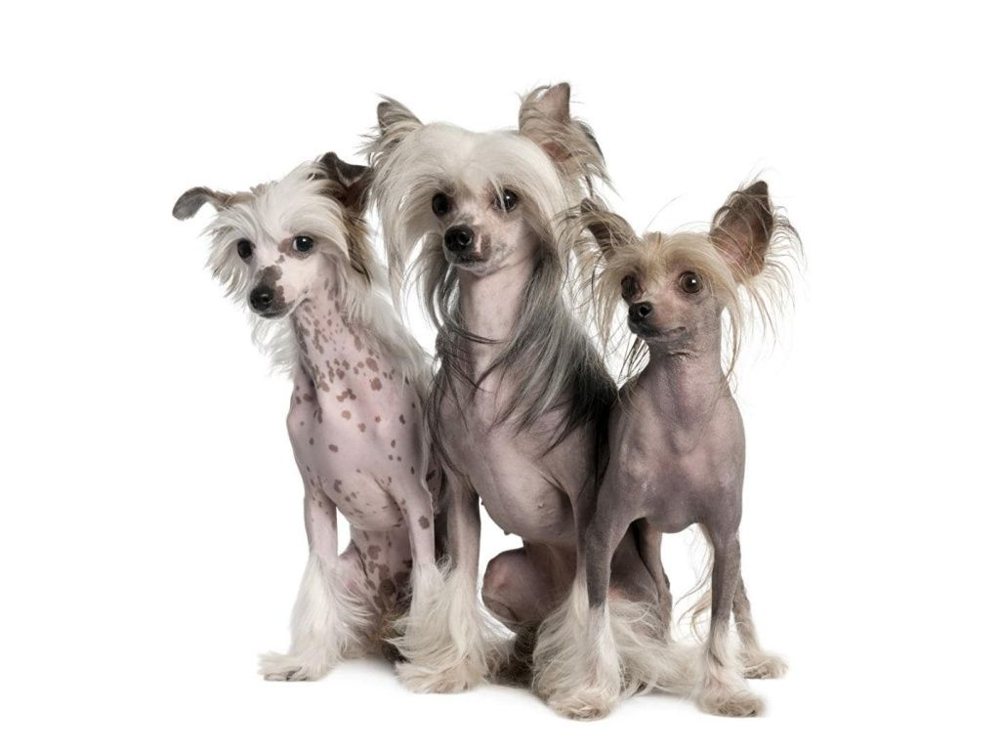
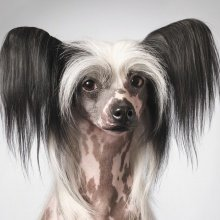
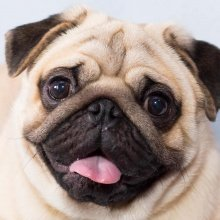

Китайские породы собак
Китайские породы собак – это особенная категория, представители которой отличаются экзотической внешностью. Среди собак Китая можно увидеть очень необычных питомцев. Всё это от большой любви китайских императоров к декоративным собакам-компаньонам, многовековой изоляции Поднебесной, и, как следствие, сохранении древнейших пород в их первозданном виде.
Содержание:
- Китайская хохлатая собака
- Мопс
- Пекинес
Китайская хохлатая собака
Китайская хохлатая собака – имиджевая, комнатная порода, представители которой делятся на два типа: бесшерстных особей с полностью голым корпусом и пуховых, заросших длинным шелковистым волосом.
Краткая информация
- Название породы: Китайская хохлатая собака
- Страна происхождения: Китай
- Вес: 2,3-5,5 кг
- Рост (высота в холке): кобели 28-33 см, суки 23-30 см
- Продолжительность жизни: 12-14 лет
Основные моменты
- Китайские хохлатые – превосходные компаньоны и «стрессосниматели», но плохие сторожа.
- Все «китайцы» очень чувствительны даже к незначительному понижению температуры окружающей среды. Соответственно, обитать такие животные должны только в квартире.
- Чрезмерно практичных владельцев порода, скорее всего, разочарует. Мягкой, легкой, сбивающейся в колтуны шерсти собак необходимо уделять много внимания, а также регулярно тратиться на услуги грумера. Бесшерстные особи в этом плане не экономичнее и потребуют расходов на ухаживающую косметику и гардероб.
Мопс
Мопс является древней и неизменно популярной на протяжении всей своей истории породой. Это прекрасная собака-компаньон для городских жителей.
Краткая информация
- Название породы: Мопс
- Страна происхождения: Древний Китай
- Вес: 6-8 кг
- Рост (высота в холке): 28-32 см
- Продолжительность жизни: 13-14 лет
Основные моменты
- Мопсы дружелюбны по отношению к членам семьи, незнакомцам и другим животным.
- Они легко подстраиваются под стиль жизни владельца.
Пекинес

Пекинес – древняя порода декоративных собак с короткими лапами, «сплющенными» мордочками и пушистой шерстью, выведенная в Китае.
Краткая информация
- Название породы: Пекинес
- Страна происхождения: Китай
- Вес: кобели 3,2-5,0 кг, суки 3,6-5,4 кг
- Рост (высота в холке): 15-25 см
- Продолжительность жизни: 12-15 лет
Основные моменты
- Согласно древней китайской легенде, пекинесы – это потомки льва и обезьяны.
- Из-за короткой морды пекинесы могут издавать забавные звуки, напоминающие храп.